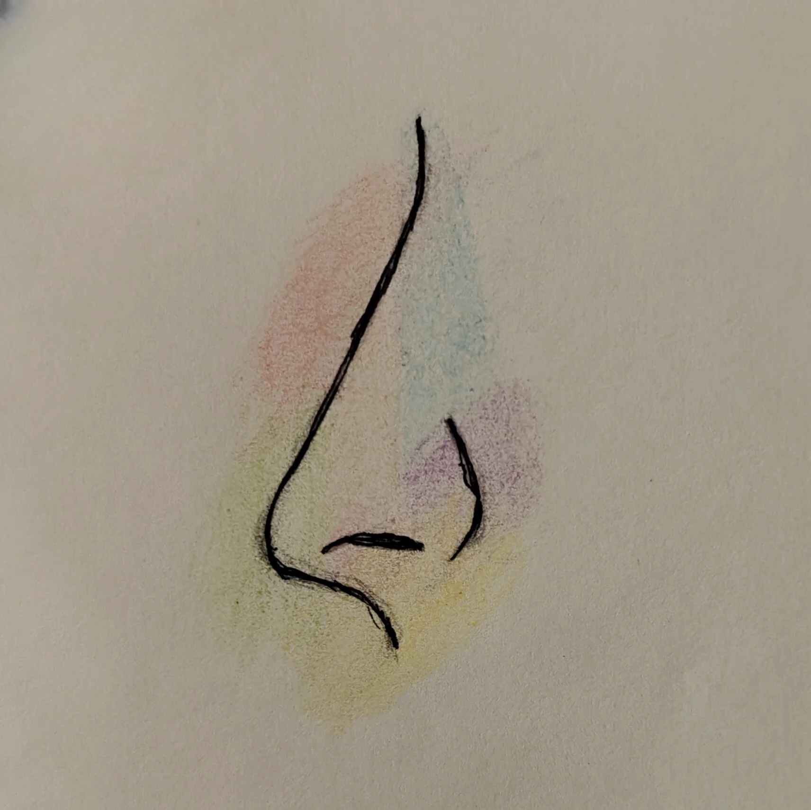
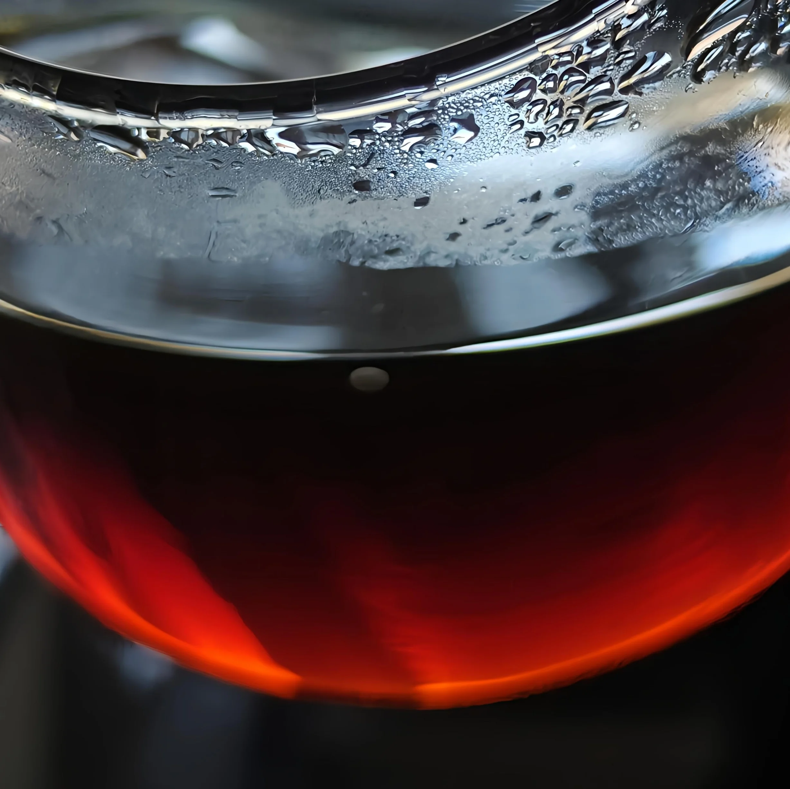
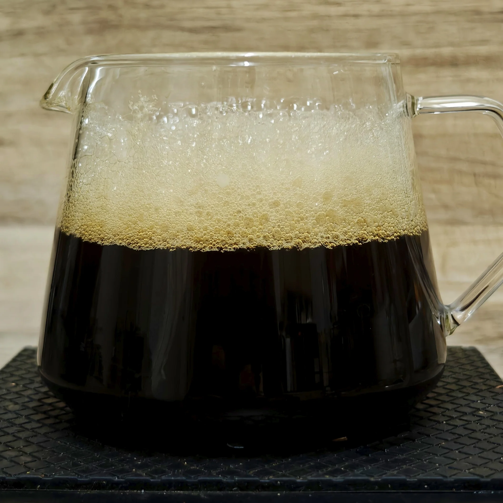

Olfactory
Olfactive hues

An assured way to categorise perfumes internally, in your own mind, is by assigning colours to how a perfumes smells. Qolom uses a simple colour scheme, to help organise and better understand these types. Read more.
Linguistics
Qolom's chosen words
To translate the core identity of a composition into something human requires word, in a HCI setting, it requires aesthetics. We use single-word associations to describe these core identities. Read more.
Linguistics
Ghāliyah
Ghāliyah means "precious" - used without sparing - to describe rare and valuable materials in perfumery. It also means a strict recipe of what can and cannot be used. Is there a middle ground?
Coffee
Chasing Clarity

Without agitation, we won't extract fully. With agitation, we lose physical clarity. A recipe developed to allow a gem-like liquor without loss in flavour. Read more.
Coffee
Impact of mouth feel

Some coffees are meant to linger, to satiate the rich texture craving that coats the mouth, something that leaves a trail of flavour and expression. Read more.
Coffee
Tea-like brews
What if you wanted to drink a fermented coffee but make it feel like a washed? What if the robust nature of a coffee needed some thinned out? What if you wanted a easy going brew that doesn't tax your sensory experience?
Coffee
Brewing for guests
In a large setting, coffee is meant to be enjoyed, not tiresomely brewed to perfection, stashed away from the hubbub of people. A easy to brew family recipe that extracts as well as smaller cups.